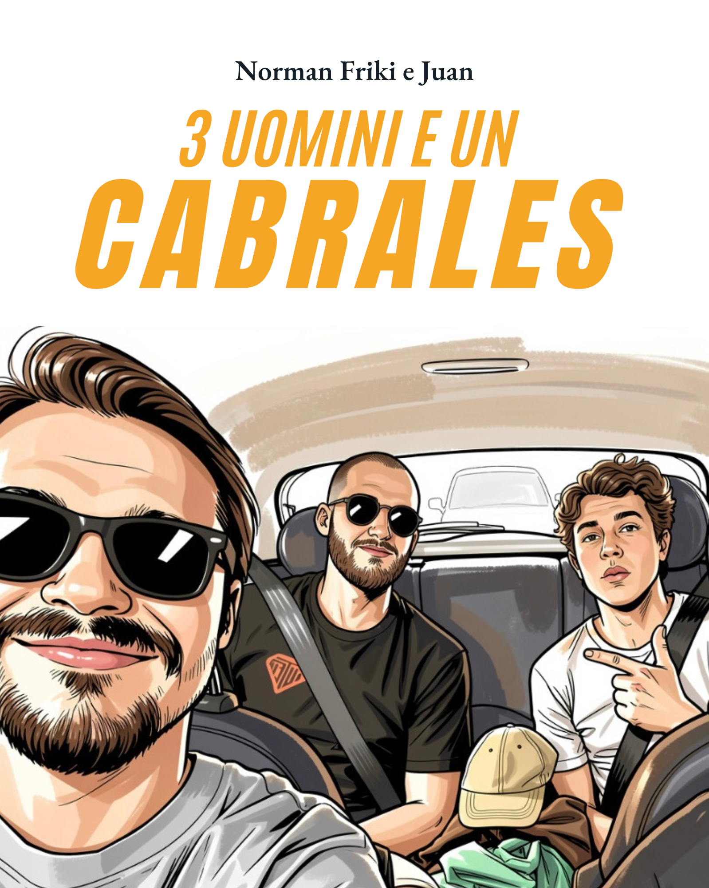
e un Cabrales
e un Cabrales
Con qualche deviazione.
per il matrimonio di
Giovanni Veroni e Ludovica Lencioni
2026
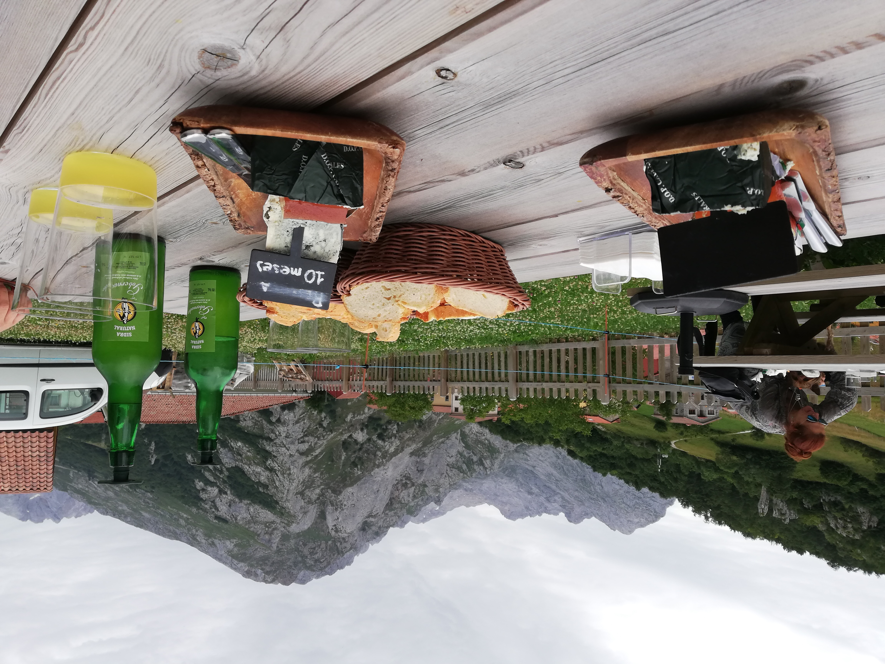
Prima no."
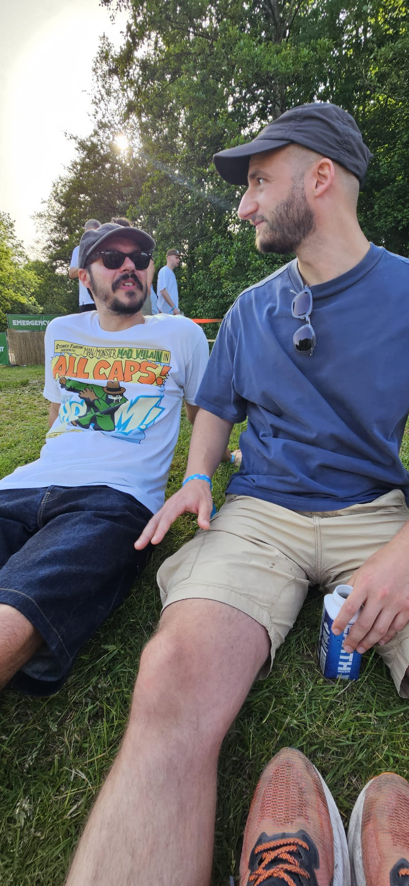
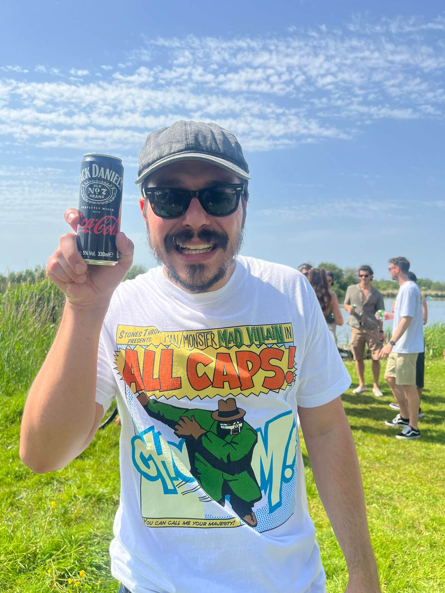
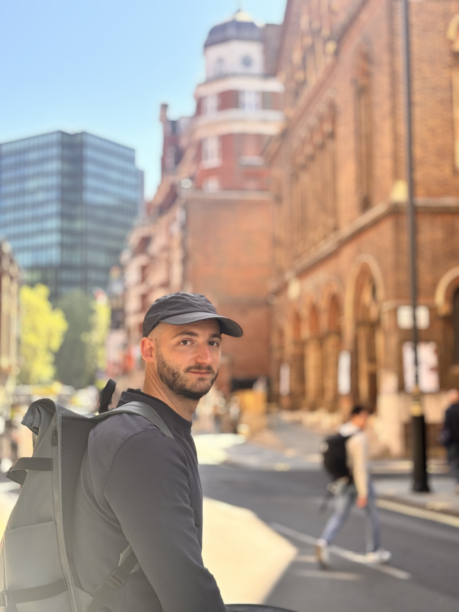
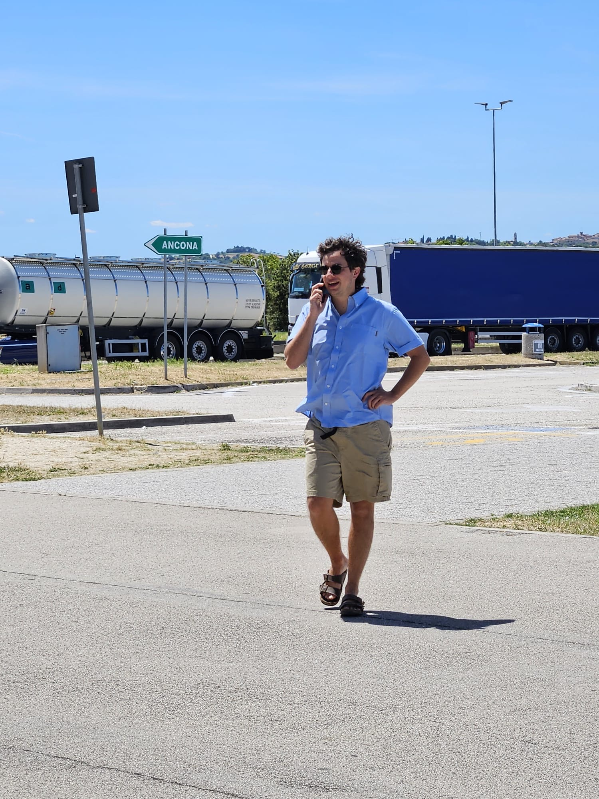
minuti dopo
il previsto.
Norman aveva detto le sette. Friki aveva detto "Claro, ci sono."
Alle sette e un quarto, nessuna risposta. Alle sette e mezza: "parto tra dieci minuti."
Alle otto e venti Friki era arrivato con due borse, una valigia di pane appena sfornato e l'aria di chi ha fatto del suo meglio.
Norman Friki. Sono le otto e venti.
Friki Lo so. Però ho trovato una cantina che fa un vino naturale pazzesco a San Polo D'Enza. Quaranta minuti. Un vino speciale per il matrimonio.
Norman Friki.
Friki Cinquanta al massimo. E ho il pane caldo.
Juan Freaky Riki. Sali in macchina.
Juan era arrivato puntuale alle sette. Seduto sul cofano, abito in custodia, giradischi nel bagagliaio.
Norman Non dire niente.
Juan Non dico niente.
Friki Vuoi del pane gluten freak?
Juan mmm.
Partirono alle otto e ventisei. Settantatré minuti dopo il previsto. Come al solito. Come sempre.
Il piano era semplice: macchina, autostrada, dritti fino in Toscana. Juan alla guida, Norman al navigatore, Friki dietro con il Cabrales — ancora un'idea vaga — in testa. Il piano sarebbe durato esattamente fino al primo cartello Autogrill 500 metri.
da recuperare.
Tre anni prima, a cena, Juan aveva detto una cosa — per ridere.
un Cabrales originale al tavolo."
Friki aveva annuito.
Nessuno ci aveva pensato più.
Tranne Friki. E Ludovica.
Il Cabrales è un formaggio stagionato nelle grotte asturiane. Nelle Asturie. In Spagna. A quasi duemila chilometri da Correggio. Minimo sei mesi di stagionatura. Il meglio: dieci. Si trova avvolto nella carta da pane, consegnato da uomini con le mani come pale.
In Italia non si trova. Quasi mai.
Friki Ho un contatto. Asturie. Picos de Europa. Produttore che stagiona nelle grotte. Ho prenotato il nostro tre anni fa.
Norman Tre anni fa.
Friki Quando Juan ha detto la cosa del Cabrales a cena.
Juan Era una battuta.
Friki Io l'ho presa sul serio.
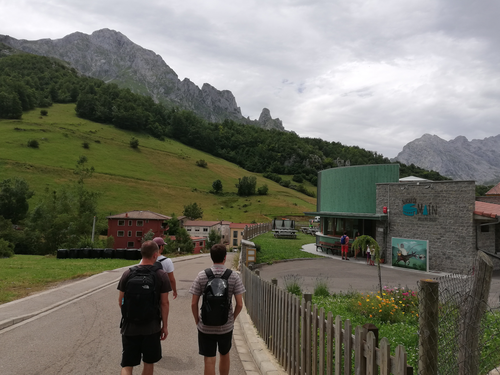
Il produttore era nelle Asturie. Picos de Europa. Spagna. Non tre ore da Correggio — quella era la versione di Friki al telefono, con un'ottimismo geografico che aveva pochi precedenti. Nella realtà: traversata della Francia, confine spagnolo, poi strada di montagna senza segnale per due ore buone.
Norman Friki. La Spagna non è a tre ore da Correggio.
Friki Dipende da come guidi.
Norman Il matrimonio è dopodomani.
Friki Juan ha chiesto un Cabrales al suo matrimonio.
Norman Era una battuta!
Friki Non per Ludovica.
Silenzio in macchina. Juan abbassa il finestrino.
Juan Andiamo in Spagna.
& Dreams
L'Autogrill era sulla destra. Sopra il bar interno, un cartello.
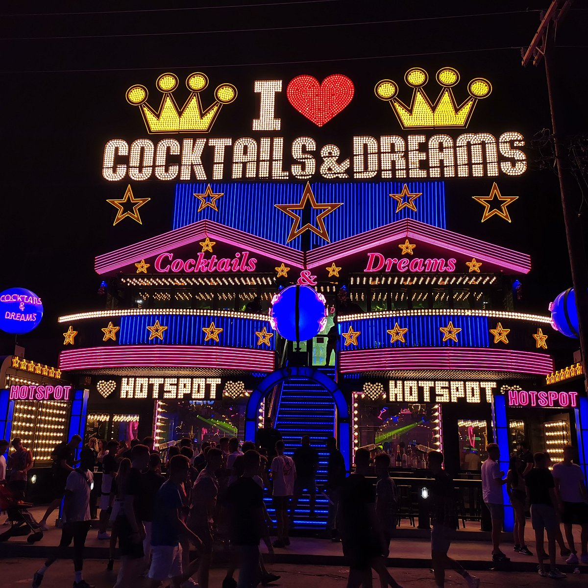
Norman lo aveva letto ad alta voce. Senza pensarci. Around the World in sottofondo.
"Sembra di essere a Zante," aveva detto.
Friki Un drink.
Norman Solo uno però.
Juan aveva già messo la freccia.
Fu lì, seduti all'Autogrill con i tramezzini e le birre medie, che Friki ricevette il messaggio di Ludovica.
"Ah, giusto per dirtelo: l'ho messo sul menù delle bomboniere. Duecento persone lo stanno aspettando."
Il Cabrales non era più una battuta. Era diventato un problema di Stato.
Il Cabrales poteva aspettare ancora un po'. Le Asturie non sarebbero scappate.
Ore quattro e diciassette del mattino.
Juan apre gli occhi. Nel letto accanto c'è qualcuno. Juan è abbastanza certo che si chiami Qwabe.
Juan guarda Qwabe. Qwabe guarda Juan.
Juan Caffè?
La giornata continua. Norman viene trovato su un divano con un bicchiere ancora in mano. Friki ha imparato una ricetta dal barista e sta già prendendo appunti.
Sono le undici. C'era ancora strada da fare verso la Toscana. Direi che la serata era stata fatta.
La macchina di Norman rimase ad aspettarli nel parcheggio dell'Autogrill per quattro giorni. Quando tornarono a riprenderla aveva una multa sul parabrezza e un piccione che sembrava essersene fatto casa. "Tanto un volo per il Belgio costava meno di un pieno," disse qualcuno. Nessuno ricorda chi, e nessuno lo ha mai smentito.
ho riperso
gli aerei.
Friki aveva avuto un'idea. Juan aveva fatto arrivare al matrimonio direttamente dall'Isola di Skye una cassa di whisky scozzesi d'annata. Ottimi whisky. Ma senza un cioccolato di qualità all'altezza, era un delitto. Il cioccolato belga era l'unico all'altezza.
Piano: volo mattina, comprare il cioccolato, volo sera. Toccata e fuga.
Friki Un giorno. Andata e ritorno.
Norman Un giorno.
Juan Prenotate. Cena stasera per festeggiare il piano.
La cena era andata bene. La serata era andata oltre.
A un certo punto era arrivato Nik euforico, si sposava tra tre giorni, la moglie era tedesca e il matrimonio sarebbe stato in Germania. Aveva ordinato da bere per tutti. Nik conosceva un posto. Poi un altro. Il volo era alle sette di mattina.
Alle cinque, prima di andare a dormire, erano entrati nell'unico posto ancora aperto. Menù scritto a mano su lavagna.
TONNO FRESCO · OGGI
Friki aveva smesso di respirare per un secondo preciso. Il volo era alle sette. Non lo presero.
Giorno dopo. Tentativo due. Taxi verso l'aeroporto.
Friki Quanto costa?
Tassista Settantadue euro.
Norman Settantadue euro.
Friki Va bene.
Arrivati all'aeroporto, il volo era partito da trentacinque minuti. Era lì che aveva chiamato Nik.
Nik Venite al matrimonio. Domani. Germania.
Norman Ci conosciamo da dodici ore.
Nik Venite al matrimonio.
Friki C'è ancora posto sull'aereo?
Nik Sì.
Friki Andiamo al matrimonio.
Il cioccolato belga non fu mai comprato. Quello che presero, invece, fu un invito a un matrimonio sconosciuto in Germania, offerto da un tale conosciuto la sera prima davanti a una Vermata di tonno fresco.
Il Cabrales, nelle Asturie, non aveva ancora idea di quanto avrebbe dovuto aspettare.
Friki controllò il telefono. Un messaggio dal produttore: "Vi aspettiamo quando volete, ma non fate troppo tardi — qui si va a letto presto!"
non ci
voleva.
Erano partiti da Bologna con un bagaglio leggero, nessun piano preciso, e un invito di dodici ore prima da uno che si sposava il giorno dopo.
Il matrimonio era a casa dei genitori della sposa. Un posto grande, fuori dalla città, con l'aria di chi ha organizzato tutto da mesi e non aveva previsto tre italiani di passaggio.
Nik li aveva aspettati fuori. Era raggiante.
Nik Siete arrivati.
Norman Siamo arrivati.
Nik Perfetto. C'è birra.
Friki Ottimo.
La sposa non li voleva. Lo aveva detto chiaramente a Nik. Nik aveva insistito. La sposa aveva ceduto con una diffidenza silenziosa ma giustificata.
Il matrimonio era a casa dei genitori di lei. Tutte le camere erano già occupate. A Norman era stata assegnata, in extremis, la camera della futura sposa.
Norman La camera della sposa.
Nik È la più bella.
Norman Lo so. Ma è la camera della sposa.
Nik Birra?
Norman Sì.
Norman aveva bevuto troppe birre. Molte di più di quanto avesse previsto. Alle tre di notte era andato a dormire nella camera della sposa.
Alle sei di mattina Norman si sveglia. Il soffitto non è quello della sua camera di casa. Le lenzuola di Norman raccontano una storia che lui non ha nessuna intenzione di confermare.
Nel corridoio appare la nonna della sposa. Lo guarda. Poi guarda il letto.
In quel momento, provvidenziale, compare un bambino di sei anni.
Norman lo indica. Con la fermezza assoluta di chi ha trovato la risposta giusta.
La nonna guarda il bambino. Norman è già in corridoio.
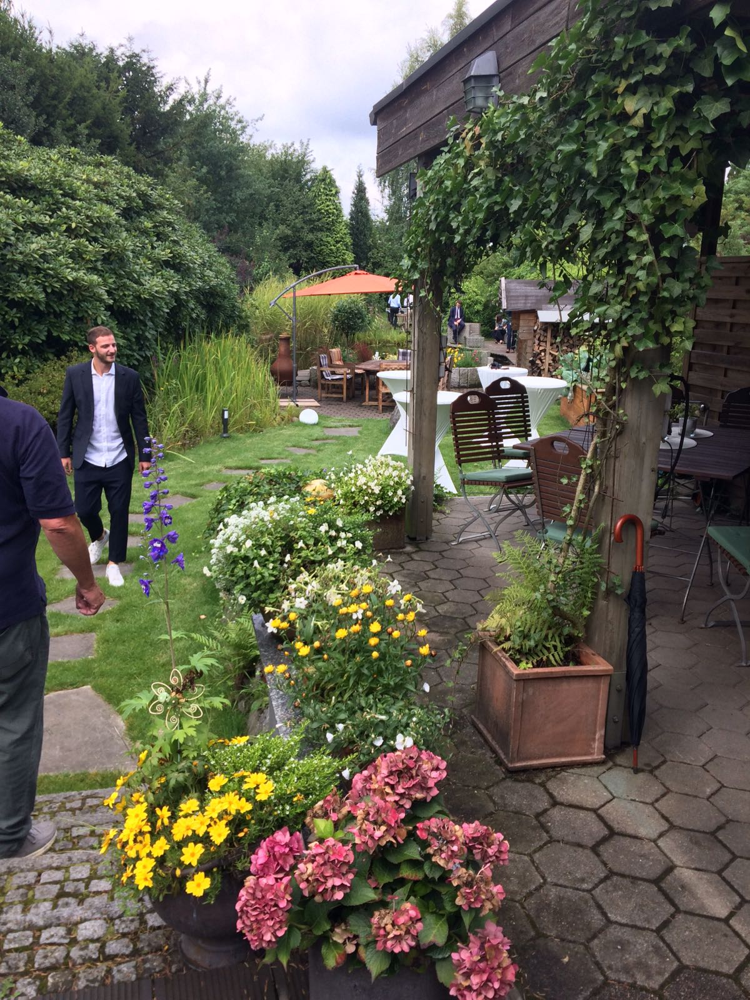
Friki Aveva funzionato.
Norman Non so di cosa stai parlando.
Juan L'unica cosa che mi preoccupa del mio matrimonio è che non ci sarà nessun bambino a portata di mano.
Norman Non so di cosa stai parlando.
La sposa non li aveva mai rivisti. Aveva avuto le sue ragioni fin dall'inizio.
Nik (al telefono, mentre sono in macchina verso l'Italia) Ciao Norman. È andato tutto bene?
Norman Tutto bene, perché?
Nik Mah, sai, qui stiamo buttando via il materasso dove hai dormito tu. Ne sai qualcosa?
Norman No, io? No. Anzi, so che c'era un bambino in casa — prova a chiedere a lui.
Il materasso fu buttato. Il bambino non fu mai interrogato.
Tornarono in Italia con la macchina che li aspettava dov'era stata lasciata — stavolta senza multe. Un piccolo miracolo che nessuno seppe spiegarsi.
Cella Monte.
Friki aveva proposto una strada secondaria. "Più scenica. Risparmiamo trenta minuti."
Quaranta minuti dopo erano nel Monferrato. Vigne, colline, borgo medievale. Dal borgo usciva della musica.
Juan si era svegliato di colpo.
Juan Cos'è questa musica.
Friki JazzRefound. Festival. Imperdibile.
Juan Ferma la macchina.
Norman Juan, il matrimon—
Juan Cinque minuti.
Juan per la lineup. Norman per il mood. Friki per i produttori locali il sabato mattina.
Il sabato a pranzo Friki aveva trovato una trattoria. Menù del giorno: risotto ai funghi. Funghi del bosco, locali, freschi. Friki li aveva esaminati con l'autorità di chi se ne intende.
Friki Questi funghi sono speciali.
Norman Speciali come.
Friki Speciali. Fidati.
Juan Tre porzioni.
Il pomeriggio era stato impegnativo. Avevano passato due ore sdraiati nel prato fuori dal borgo a guardare le nuvole con un'intensità insolita. Il festival andava avanti senza di loro. Non se ne erano accorti.
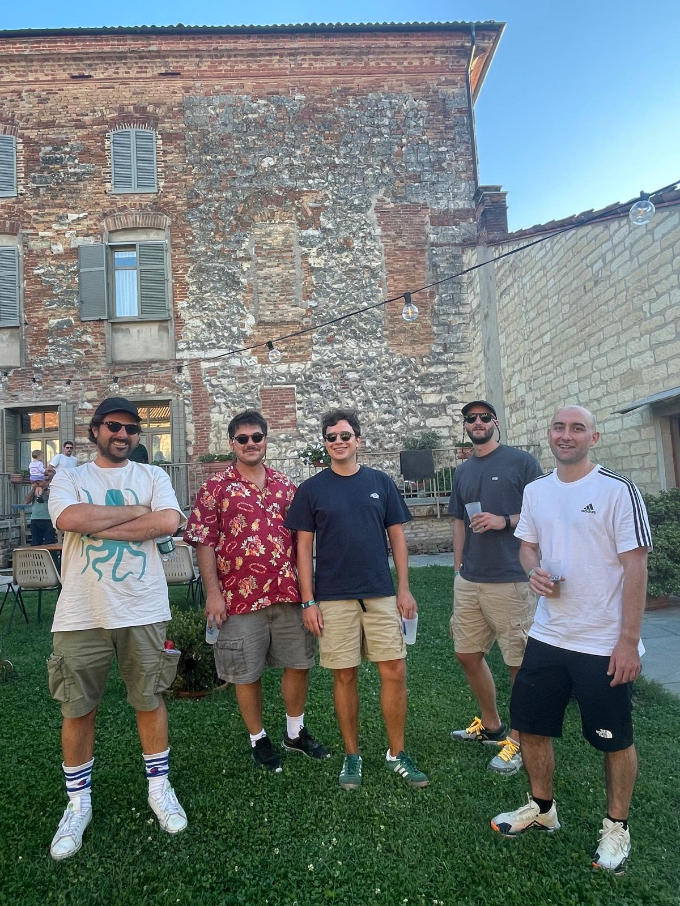
tre uomini,
un loch.
Nessuno dei tre aveva più nominato il Cabrales da giorni. Era ancora lì, però — come una promessa in sospeso, nelle Asturie, ad aspettare.
Era finito il DJ set di Koko. Il Giapponese li aveva fatti impazzire. Erano le undici di sera con una certa energia ancora addosso e nessuna voglia di tornare a casa.
Friki C'è un Flixbus per Edimburgo.
Norman Da dove parte?
Friki Da qui. Tra quaranta minuti.
Juan Quante ore?
Friki Ventidue. Con due cambi.
Silenzio.
Juan Prendiamolo.
Norman aveva prenotato online: "cialda in legno, minuscola, vista eccezionale." Era minuscola davvero in tre ci stavano a malapena. Ma la vista era pazzesca: il loch sotto, le colline, il cielo scozzese che cambiava ogni dieci minuti.
Juan aveva portato i suoi vinili. Come sempre.
Friki Sono le undici di mattina.
Juan È Scozia.
Whisky, dischi, il loch che rifletteva le nuvole. Nel pomeriggio avevano dormito. Alle diciotto erano svegli, pronti per la serata.
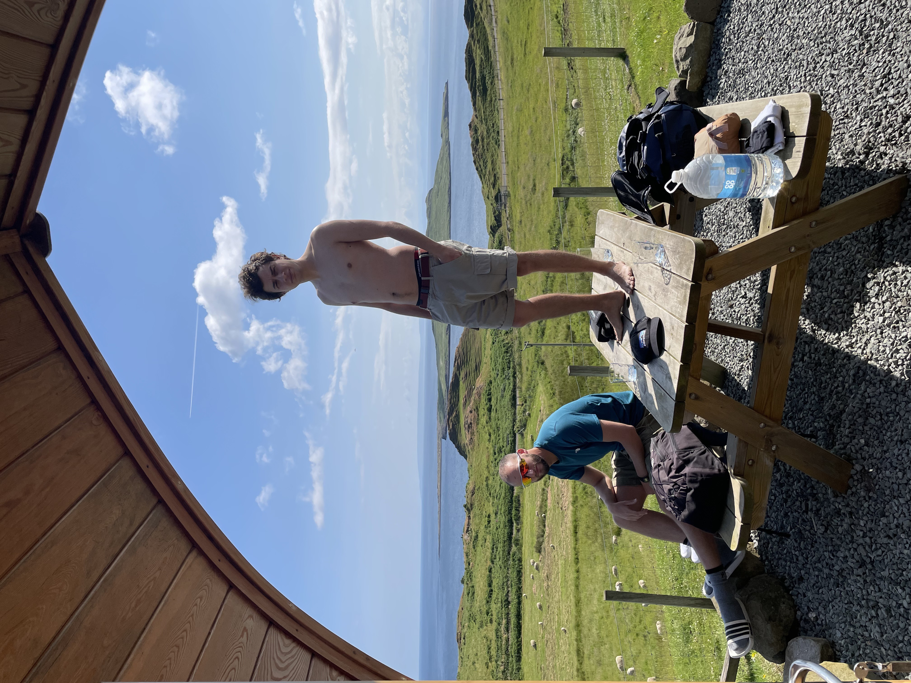
Friki era uscito sul ballatoio della cialda senza dire niente. Era rientrato venti minuti dopo.
Friki Prima di uscire.
Aveva aperto la porta. Lungo la ringhiera della cialda, uno accanto all'altro, c'erano undici bicchierini di whisky. Li aveva preparati mentre gli altri dormivano.
Norman li aveva contati.
Norman Undici.
Friki Siamo in tre.
Norman Non tornano i conti.
Friki Ho ottimizzato.
Juan Andiamo.
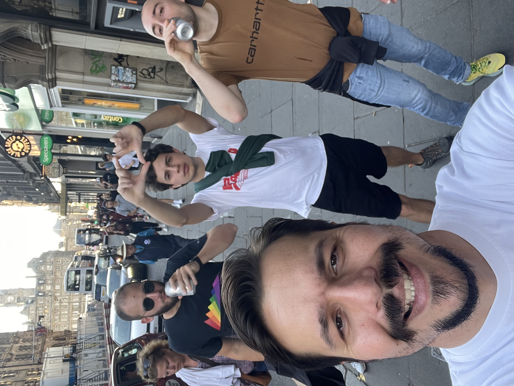
Era così che iniziava la serata.
Finì alle undici di mattina del giorno dopo, su una spiaggia di Edimburgo. Nessuno ricorda come ci fossero arrivati. Ognuno ricorda una cosa diversa. Norman ricorda il freddo. Juan ricorda la musica. Friki ricorda di aver trovato un posto dove servivano colazione alle dieci.
Friki Uova, haggis e bacon. Servono fino alle dodici.
Norman Sono le undici di mattina, siamo su una spiaggia, non so come ci siamo arrivati.
Friki Abbiamo un'ora.
Juan Andiamo.

Il volo di rientro era perso. Ovviamente. Avevano preso la coincidenza successiva via Londra l'unica opzione rimasta.
A Londra Pink aveva un concerto. La città era bloccata. La coincidenza era partita senza di loro. Norman, Friki e Juan si erano ritrovati in mezzo a centomila persone che cantavano, con i bagagli, senza hotel prenotato.
Friki Ho trovato un hotel.
Norman Dove?
Friki Zona est. Budget.
Norman Quanto budget?
Friki Molto budget.
Juan È stata una delle serate migliori del viaggio.
Dell'Edimburgo Pride e della notte in spiaggia restava solo qualche foto sfocata e nessun ricordo affidabile. Il Cabrales, però, non aveva scadenza infinita: il produttore aveva scritto di nuovo, più insistente stavolta. Fu Friki, per una volta serio, a dire: "Ok, basta. Andiamo a prenderlo prima che sia troppo tardi davvero."
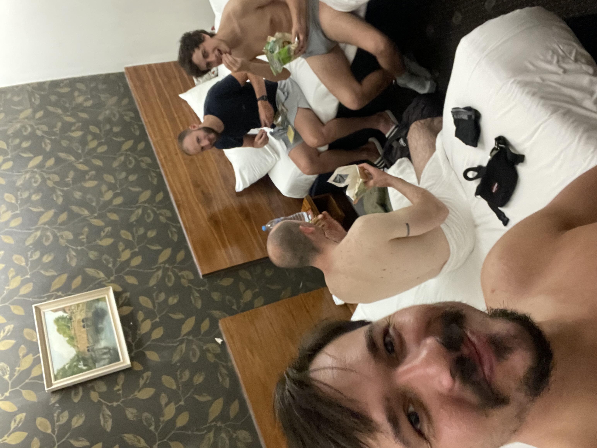
2 ore di viaggio in mezzo alle montagne.
Picos de Europa, Asturie, Spagna del nord. La strada saliva tra le montagne. Il navigatore aveva smesso di aggiornare da venti minuti — segnale assente, nessun bar, nessun posto dove fare marcia indietro. Solo roccia, verde e la voce di Friki che leggeva ad alta voce le note del produttore come fossero le tavole della legge.
Friki "Stagionato nelle grotte naturali della sierra asturiana, minimo dieci mesi, crosta naturale, pasta erborinata. Avvolto a mano nella foglia di platano."
Norman Friki, stiamo andando su una mulattiera. In Spagna. In mezzo al nulla.
Friki "Sapore intenso, persistente, con note di grotta e muschio."
Norman Note di grotta.
Juan Andate avanti.
Un uomo con le mani come pale aveva aperto la porta. Aveva detto tre parole "eccolo, è pronto" e aveva consegnato il formaggio avvolto nella carta da pane come se stesse consegnando qualcosa di sacro.
Era il formaggio più buono che avessero mai mangiato. Valeva ogni chilometro, ogni deviazione, ogni giorno perso.
Lo avevano rimesso nel sacchetto con cura.
Il Cabrales era in macchina. Finalmente.
Con il formaggio nel bagagliaio — e nell'abitacolo, e ovunque, a giudicare dall'odore — sarebbe bastato puntare dritti verso la Toscana. Invece si fermarono "un'ora" in un club di Parigi chiamato Djoon. L'ora durò tre giorni. Quando ripartirono, mancavano ventiquattr'ore al matrimonio.
Il problema del Cabrales in macchina in estate è che si sente. Norman guidava. Erano le otto di mattina. Pioveva.
Norman aveva gli occhiali da sole.
Friki Norman. Sta piovendo.
Norman Lo so.
Friki Sono le otto di mattina.
Norman Lo so.
Friki Hai gli occhiali da sole.
Norman Lo so.
Al semaforo, la macchina della Guardia Civil si era fermata affianco. I finestrini erano abbassati. L'odore del Cabrales era uscito.
L'agente della Guardia Civil aveva guardato Norman. Occhiali da sole. Otto di mattina. Pioggia. Odore inspiegabile.
Agente ¿Ha bebido?
Norman No, guardi, mi sono appena svegliato.
L'agente aveva guardato Friki. Friki aveva guardato il soffitto. Norman era stato invitato ad accostare.
Juan, nel momento cruciale, aveva già tirato fuori il telefono. La foto esiste. Ritrae Norman seduto nel retro della camionetta, aria da saggio intatta, che spiega qualcosa in spagnolo a due agenti sempre più perplessi. Perché in spagnolo non è mai stato chiarito.
Juan Quella foto.
Norman Non esiste nessuna foto.
Juan Norman, stavi parlando in spagnolo.
Norman Mi ero confuso.
Friki Con la Guardia Civil spagnola.
Norman Juan. Oggi ti sposi. Pensa a cose belle.
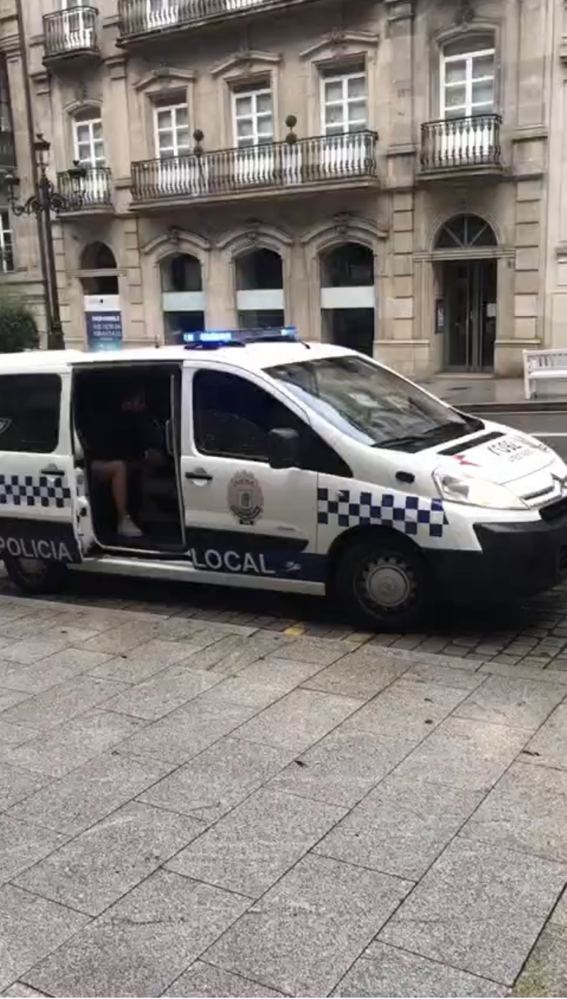
Djoon!
Friki aveva detto breve tappa. Nessuno dei tre aveva chiesto quanto breve.
Il Djoon era un club. Parigi, Quai de la Gare. Di pomeriggio sembrava una sala prove: poca luce, odore di incenso e di anni passati dentro, il DJ già al lavoro come se fosse mezzanotte.
Erano entrati alle tre e mezza.
Friki Un'ora. Giusto per sentire l'atmosfera.
Norman Certo.
Juan Sì.
Erano usciti a notte fonda.
Nessuno aveva guardato l'orologio. Non per distrazione per scelta. Dentro, tutto il locale ballava esattamente nello stesso momento, come in una scena di quei film americani dove la danza è sempre troppo perfetta per essere vera. Qui era vera.
Erano tornati il secondo giorno. Poi il terzo.
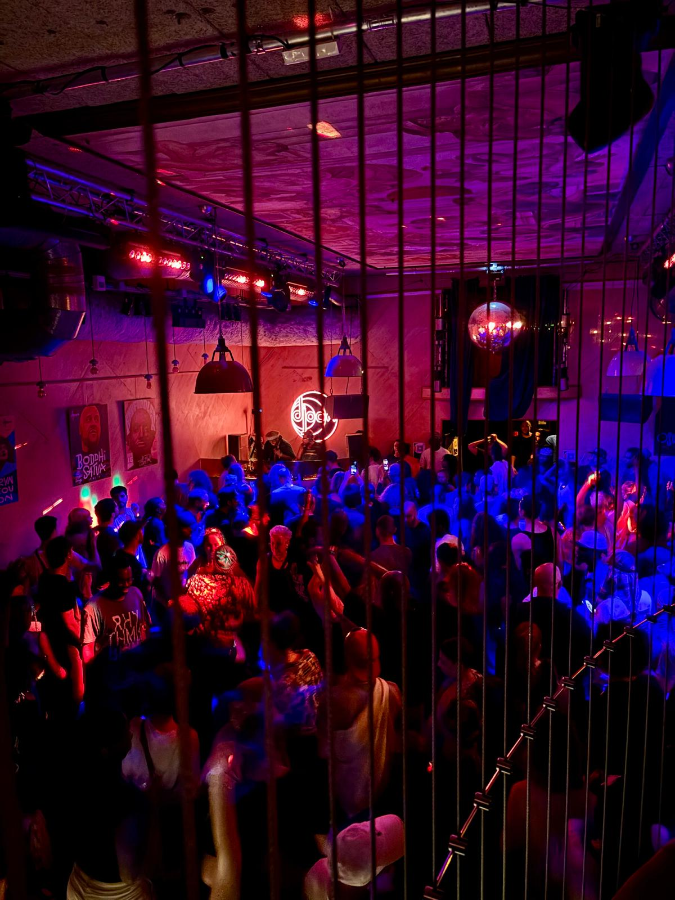
Senza discuterne. Senza che nessuno lo proponesse. Erano tornati e basta.
Norman Quindi questa era la breve tappa.
Friki È stato breve. Tre giorni è breve.
Juan (annuisce)
Erano di nuovo in macchina. Direzione Toscana. Il Cabrales nel bagagliaio, la Guardia Civil spagnola alle spalle, il navigatore che per una volta sapeva dove stava andando.
Juan aveva messo un disco. Qualcosa di lento.
Norman guidava. Friki dormiva.
Dopo un po' Juan aveva detto una cosa sola.
Juan Sapete che ho capito una cosa.
Norman Cosa.
Juan Niente. Guidate.
Sette giorni. Per quattro ore di strada. Con un Cabrales nel bagagliaio.
Norman aveva parcheggiato. Erano fermi nel parcheggio davanti alla chiesa. La cosa era lì il matrimonio, dentro, tra pochi minuti.
Norman Devo andare in bagno.
Friki Anch'io.
Juan Sul serio.
Norman È l'emozione.
Cinque minuti dopo erano tornati. Il lunotto posteriore della macchina non c'era più. Qualcuno lo aveva sfondato. La targa diceva Correggio non era bastato a fermare nessuno.
Norman aveva guardato il buco. Aveva annuito, come chi accetta quello che non può cambiare.
Norman Andiamo.
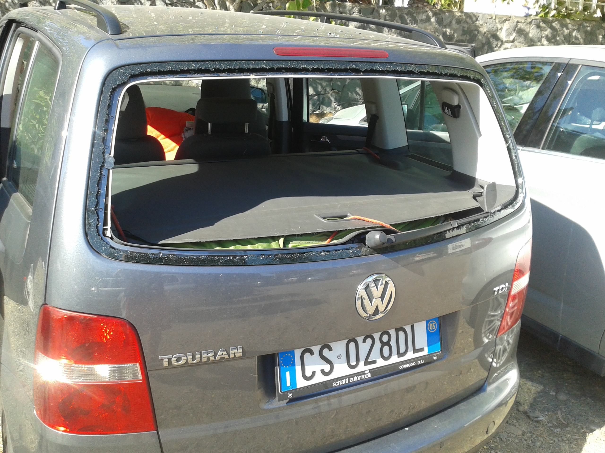
Juan si era fermato davanti alla chiesa. Norman e Friki si erano fermati con lui.
Juan Okay.
Norman Okay.
Friki stava guardando una trattoria. Norman lo aveva guardato.
Friki Dopo. Giuro.
Juan li aveva guardati entrambi. I suoi testimoni. Da quando aveva diciassette anni. Aveva annuito. Era entrato.
Autogrill. Ristoranti. Agriturismo.
Cialda. Festival. Grotte asturiane.
Anni a cercare le cose autentiche.
I posti giusti, la musica giusta, il formaggio giusto.
non stava in
nessuna grotta.
Era nella stessa classe di Norman al liceo.
Nutriva verso di lui una diffidenza silenziosa, ma giustificata.
Si chiamava Ludovica.
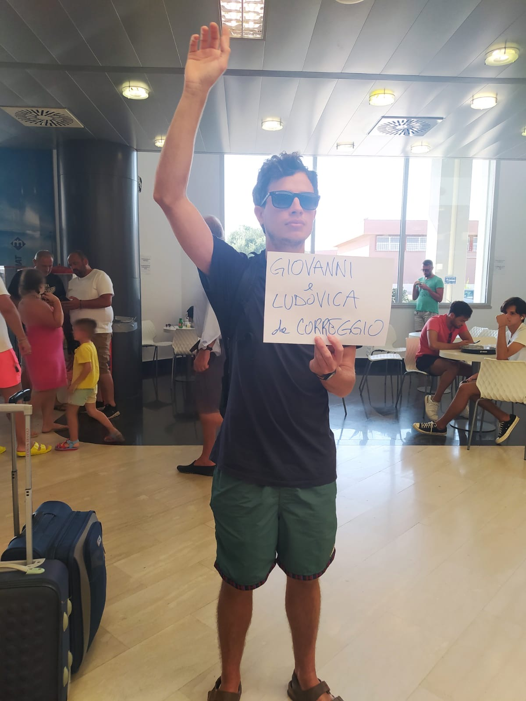
Juan guarda Ludovica avanzare verso di lui.
Pensa ai sette giorni. Alle notti, alle deviazioni impossibili, ai posti che non avrebbero trovato senza Friki. Alle serate che non sarebbero finite così senza Norman.
Li vede in prima fila.
Sono lì da quando aveva dodici anni.
Pensa ad Amsterdam. A quel pomeriggio nel parco, al sole che entrava storto. A quella frase che era uscita senza pensarci, come le cose vere.
Ludovica è davanti a lui.
Juan sorride.
Non riesce a smettere.
Prima no."
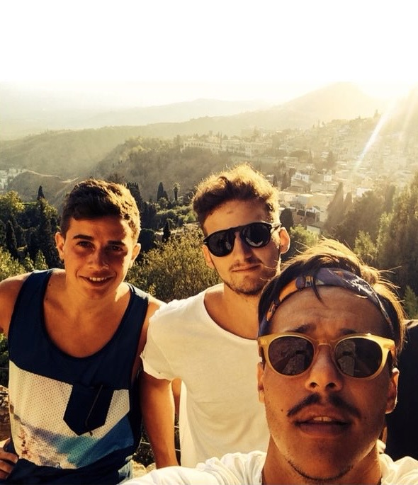
Siamo arrivati in ritardo.
Con un vetro rotto.
Con un Cabrales nel bagagliaio
che si sentiva da tre file di macchine.
Non poteva andare diversamente.
Abbiamo cercato le cose giuste in posti lontani.
Le abbiamo trovate sempre negli stessi tre posti:
una macchina, una stanza, un prato.
Adesso sei sposato.
Il capitolo migliore deve ancora iniziare.
E quando gli ultimi invitati scartarono il loro pezzo di Cabrales, nessuno seppe mai quanto fosse costato davvero arrivare fin lì.
la cosa più rara.
Con tutto l'amore di chi ha guidato sette giorni
con un Cabrales nel bagagliaio e lo rifaremmo.
NORMAN & FRIKI
Tre amici. Un Cabrales delle Asturie scelto come bomboniera per duecento invitati. Sette giorni per attraversare mezza Europa e arrivare in tempo a un matrimonio in Toscana.
Cosa poteva andare storto? Quasi tutto.
Questa è la vera storia (giurato) di come Juan, Norman e Friki non sono riusciti a fare il tragitto più semplice del mondo — tra un Autogrill fuori controllo, un matrimonio sconosciuto in Germania, ventidue ore di Flixbus per la Scozia e un club di Parigi dove "un'ora" è durata tre giorni.
Alla fine sono arrivati. In ritardo, con un vetro rotto e un Cabrales che la Guardia Civil non dimenticherà tanto facilmente.
Perché in fondo, l'unica cosa più rara di duecento porzioni di Cabrales... è un'amicizia come la loro.